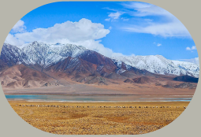
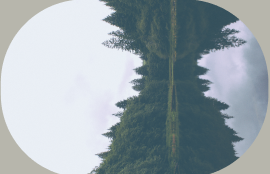
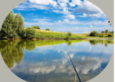

От истока до устья — строго по руслу, с учётом всех изгибов. Чаще всего используют спутниковые данные и ГИС‑программы, также применяют GPS‑трекинг и лазерное сканирование.
Из‑за резкого роста объёма воды: сильных дождей, таяния снега, ледяных заторов, штормового ветра в устьях, прорыва плотин или засорения русла.
Щука, окунь, сом, лещ, судак, плотва, стерлядь, осётр, таймень, муксун, нельма и многие другие — зависит от региона и типа водоёма.



Можете задавать разные вопросы на указанный email:
email: pichugin.a27@mail.ru